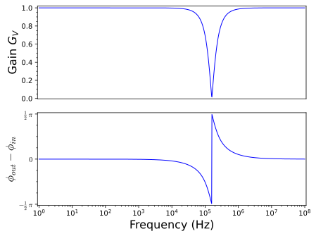

Just as with DC circuits, we can let Python do most of the mathematical manipulation for us when determining circuit behavior. As an example, we’ll examine the behavior of the circuit in Figure 3.8.1.
Figure3.8.1.A generic LRC circuit. Let \(R=1\text{k}\Omega\text{,}\)\(C=1 \mu\text{F}\text{,}\) and \(L=1\text{mH}\) for our analysis.
Using Kirchhoff’s laws and the branch method, we find the following equations
Plot the gain and phase curves for the circuit in Figure 3.8.3.
Answer.

Solution.
If we examine the circuit in Figure 3.8.3, we find that it is exactly the same circuit as we examined in Figure 3.8.1 except we are now measuring \(V_\text{out}\) across the resistor instead of across the inductor and capacitor. This means that the matrix equation will be identical, as will our solutions for all of the currents.
Example3.8.4.RLC Circuit Analysis Using Differential Equations and Python.